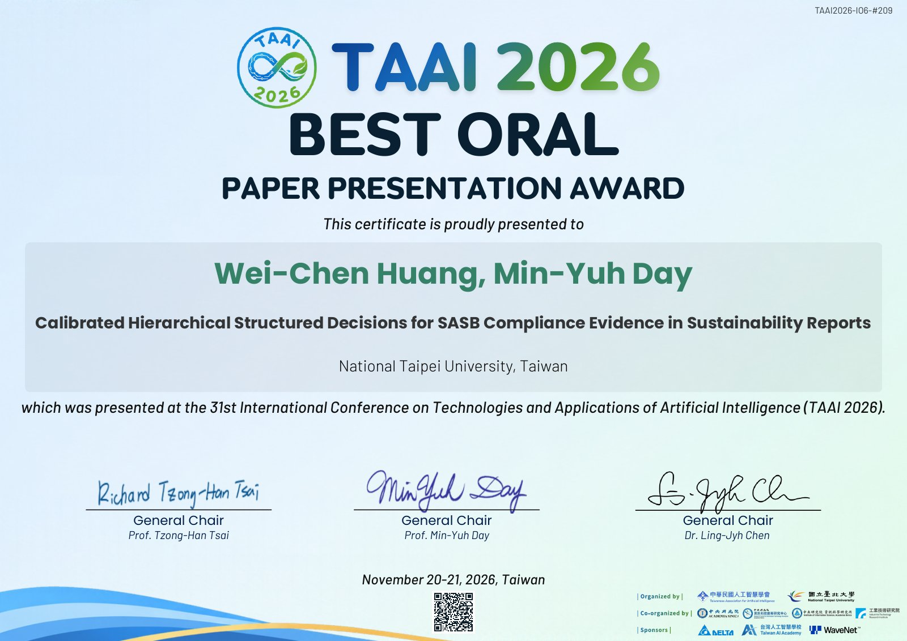

TAAI 2026 論文獎項證書
TAAI 2026 最佳口頭論文發表獎
Calibrated Hierarchical Structured Decisions for SASB Compliance Evidence in Sustainability Reports
作者單位: National Taipei University, Taiwan
- 論文
- 論文 #209
- 場次
- 國際口頭場次 6
- 頒發
- · TAAI 2026 閉幕典禮與頒獎
- 頒發單位
- 中華民國人工智慧學會（TAAI）、國立臺北大學
- 證書編號
TAAI2026-IO6-#209-BOPA- 證書印製編號
TAAI2026-IO6-#209
本頁為 TAAI 2026 官方證書紀錄。證書副本與本頁 PDF 相符即為真。如有疑問請來信：taai2026org@gmail.com